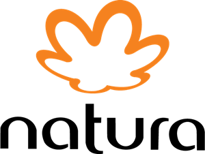
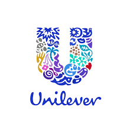
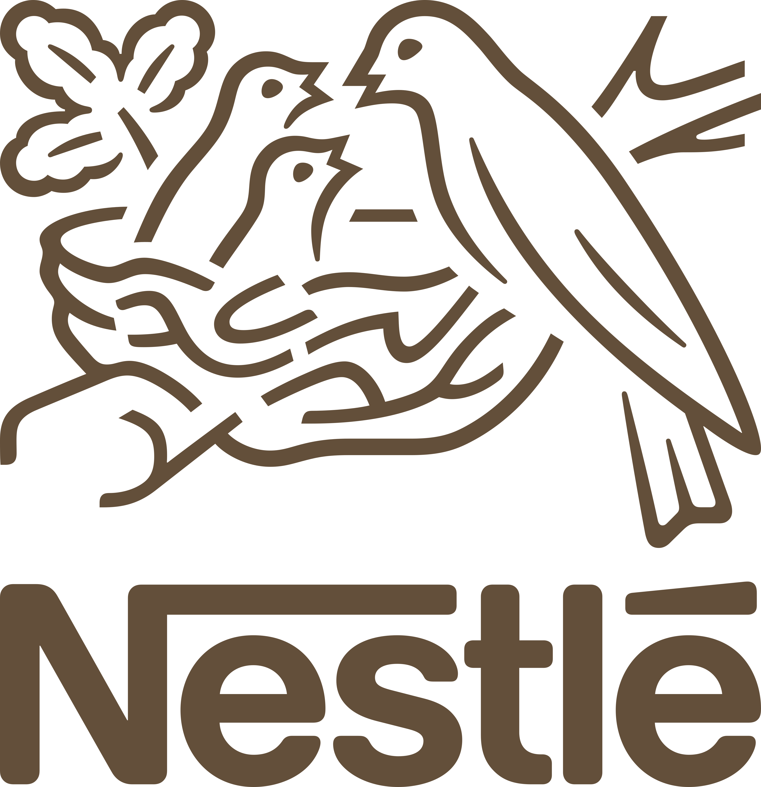

Compre apenas o necessário: Pense antes de comprar e questione se você realmente precisa do item em questão. Evite compras por impulso e opte por produtos duráveis e de qualidade.
Reduza, reutilize, recicle: Aplique os princípios dos 3Rs em sua vida diária. Reduza o consumo desnecessário, reutilize produtos e embalagens sempre que possível e recicle corretamente o que não pode ser reaproveitado.Priorize o local: Opte por comprar produtos de fabricantes e produtores locais. Isso ajuda a reduzir a pegada de carbono relacionada ao transporte e a apoiar a economia local.Conheça a origem dos produtos: Procure informações sobre a origem e o processo de fabricação dos produtos que você consome. Escolha marcas e empresas que sejam transparentes em relação aos seus processos de produção e fornecedores.Evite produtos descartáveis: Priorize produtos reutilizáveis em vez de descartáveis. Por exemplo, utilize garrafas de água reutilizáveis em vez de garrafas plásticas descartáveis.Reduza o consumo de recursos naturais: Economize água, energia e outros recursos naturais em seu dia a dia. Pequenas ações como desligar as luzes ao sair de um cômodo ou tomar banhos mais curtos podem fazer a diferença.Compartilhe e troque: Compartilhe itens que você usa ocasionalmente com amigos ou familiares. Considere participar de grupos de troca, onde você pode dar e receber produtos sem que seja necessário comprá-los novos.Apoie iniciativas sustentáveis: Busque apoiar empresas, organizações e projetos que estejam comprometidos com a sustentabilidade e práticas socialmente responsáveis.Ao adotar práticas de consumo consciente, você contribui para um mundo mais equilibrado e sustentável, onde as escolhas individuais têm um impacto positivo no coletivo. Lembre-se de que pequenas ações cotidianas podem fazer uma grande diferença a longo prazo.
VIDEO
TRÊS EMPRESAS MAIS SUSTENTAVÉIS DO BRASIL: A Natura é uma empresa brasileira de cosméticos e produtos de beleza, fundada em 1969. A empresa é conhecida por sua abordagem sustentável e compromisso com a responsabilidade social.
A Unilever é uma das maiores empresas de bens de consumo do mundo. Ela atua em diversas categorias de produtos, incluindo alimentos, bebidas, produtos de higiene pessoal, produtos de limpeza doméstica e cuidados com o lar.
A Nestlé é uma das maiores empresas de alimentos e bebidas do mundo, com sede na Suíça. Fundada em 1866, a empresa possui uma ampla variedade de marcas e produtos que são comercializados em todo o globo.

>
>
Relacionados: